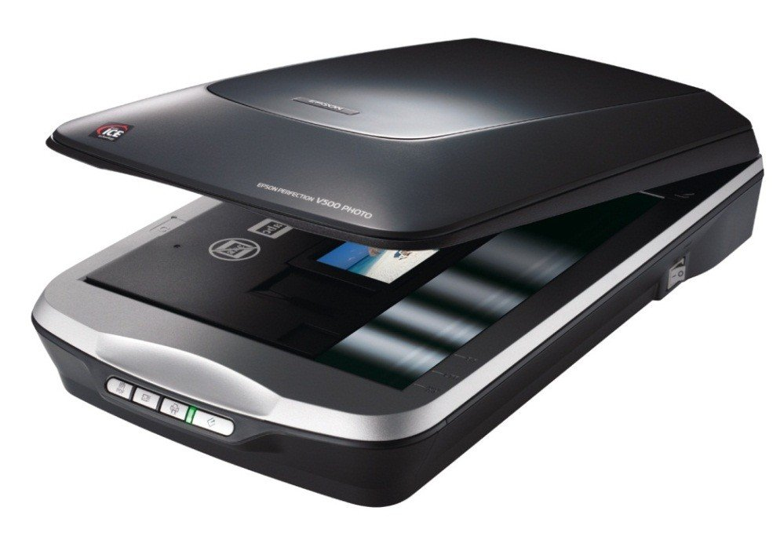

Сканери - це тип комп'ютерного обладнання, призначений для цифрового збереження фотографій і документів,
що дозволяє користувачам друкувати, копіювати або висилати факсом різні матеріали. Нижче наводяться кілька недавніх
розробок в технології сканування та опис самих надійних торгових марок.
Основною функцією сканера є цифрова копія
зображення (фотографії) або документа. Цифрові копії користувач може відрегулювати на свій розсуд і потім друкувати,
копіювати або відправляти в цифровому форматі в будь-яку точку світу. Сканери найчастіше використовуються громадськістю
для того, щоб робити копії фотографій або важливих документів.